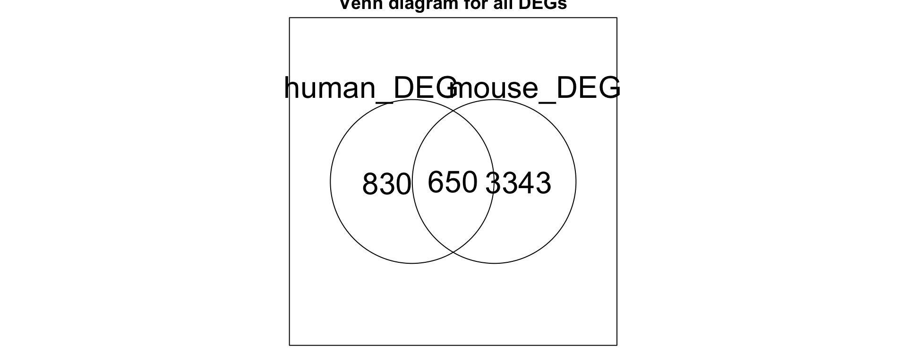

Comparisson of DE genes in DSS colitis vs Human colitis
Czarnewski et al 2019
Paulo Czarnewski
30 May 2019
1 Load Packages
#Installing required packages
source("./support_functions.R")
inst_packages(c("readxl","data.table","biomaRt","RColorBrewer","rafalib","enrichR","venn"))## Pkg_Status
## readxl TRUE
## data.table TRUE
## biomaRt TRUE
## RColorBrewer TRUE
## rafalib TRUE
## enrichR TRUE
## venn TRUE#Defining color paletes
palete <- RColorBrewer::brewer.pal(8,"Set2")
mypalette2 <- c(brewer.pal(n = 8,name = "Set2"),brewer.pal(n = 9,name = "Set1"))2 Loading Human dataset
UC_DEgenes <- data.frame(readxl::read_xlsx("/Users/Czarnewski/Box Sync/Paulo_data/20170913 - Human UC treatment prediction/Treatment naive UC/jjx139_suppl_supplementary_table_1.xlsx",skip = 1))
rownames(UC_DEgenes) <- UC_DEgenes[,1]
UC_DEgenes <- as.matrix(UC_DEgenes[,2:3])3 Loading Mouse-human homologs
Since we used the gene annotation from JAX in part of the anlaysis, it is likely that the list of differentially expressed genes might slightly vary depending on the updates in their database. For this reason, we also provided the list of genes obtained during our initial anlaysis in order to produce the exact same figures as in the paper.
#A list of homolog genes can be found in:
#homologs <- fread('http://www.informatics.jax.org/downloads/reports/HMD_HumanPhenotype.rpt')
#homologs <- data.frame("mouse"=homologs$V5,"human"=homologs$V1)
#Load the homolog gene list version downloaded in 2018-06-15 used in the paper.
homologs <- read.csv("../processed_files/homologs.csv",row.names = 1)
head(homologs)4 Loading Mouse dataset
#Loading mouse data
mouse_DEgenes <- read.csv("../processed_files/DEgenes.csv",header = T,row.names = 1)
mouse_modules <- read.csv("../processed_files/gene_modules.csv",header = T,row.names = 1)5 Plotting venn diagram for genes in common
mouse_homologs <- rownames(mouse_DEgenes)
mouse_homologs <- mouse_homologs[!(rownames(mouse_DEgenes) %in% homologs[,1] )]
mouse_homologs <- c(mouse_homologs, as.character(homologs[homologs[,1] %in% rownames(mouse_DEgenes),2]))
mypar(mar=c(2,2,4,2))
input <- list(human_DEG=as.character(rownames(UC_DEgenes)),
mouse_DEG=mouse_homologs)
a <- attr(venn(input,cexil = 2,cexsn = 2), "intersections")
title(main = paste0("Venn diagram for all DEGs"))
6 Plotting venn diagram per cluster
intersect_per_cluster <- list()
mypar(3,3,mar=c(2,2,4,2))
for(i in 1:max(mouse_modules[,1])){
mouse_homologs_module <- rownames(mouse_DEgenes)[mouse_modules[,1] == i]
mouse_homologs_module <- mouse_homologs_module[!(rownames(mouse_DEgenes)[mouse_modules[,1] == i] %in% homologs[,1] )]
mouse_homologs_module <- c(mouse_homologs_module, as.character(homologs[homologs[,1] %in% rownames(mouse_DEgenes)[mouse_modules[,1] == i],2]))
input <- list(human_DEG=as.character(rownames(UC_DEgenes)),
mouse_DEG=mouse_homologs_module)
a<-attr(venn(input,cexil = 1.5,cexsn = 1.5), "intersections")
title(main = paste0("Module ",i))
intersect_per_cluster[[i]] <- a$`human_DEG:mouse_DEG`
}
7 Plotting percentages per cluster
temp <- sapply(intersect_per_cluster,length)
names(temp) <- paste0("module",1:max(mouse_modules[,1]))
mypar(1,2,mar=c(4,5,2,3))
barplot(temp[order(temp)],horiz=T,yaxs="i",col=mypalette2[1:max(mouse_modules[,1])][order(temp)],las=1,border=NA,xaxs="i",xlim=c(0,200),xlab='number of genes')
abline(v=0,lwd=2)
text(temp[order(temp)],(0:(length(temp)-1)*1.2)+0.7,paste0(100*round(temp[order(temp)]/sum(temp),3),"%"),pos=4)
pie(temp[order(temp,decreasing = T)],col = mypalette2[1:max(mouse_modules[,1])][order(temp,decreasing = T)],clockwise = T,border = "white",main = "Percentage of conserved gene per cluster")
8 Performing Gene Set Analysis on the shared list between mouse and humans
pvalue_cutoff <- 0.05
no_genes_cutoff <- 3
#GO enrichment
a <- enrichr(genes=unique(unlist(intersect_per_cluster)), databases = "GO_Biological_Process_2017")[[1]]
#remove terms with p-values > pvalue_cutoff and number of genes < no_genes_cutoff
a <- a[order(a$P.value,decreasing = F),]
a <- a[a$P.value < pvalue_cutoff & as.numeric(sapply(strsplit(a[,"Overlap"],"/"),"[[", 1)) >= no_genes_cutoff,]
#remove terms with "positive/negative regulation"
a <- a[grep("regulation",a$Term,invert = T),]
#if (nrow(a) > 20) { a <- a[order(a$P.value,decreasing = F),][1:20,] }
a$Term <- sapply(strsplit(a[,"Term"]," [(]GO:"),"[[", 1)
#KEGG enrichment
b <- enrichr(genes=unique(unlist(intersect_per_cluster)), databases = "KEGG_2016")[[1]]
b <- b[order(b$P.value,decreasing = F),]
b <- b[grep("_hsa05",b$Term,invert = T),] #Remove disease-related KEGG pathways ("hsa05"")
b <- b[b$P.value < pvalue_cutoff & as.numeric(sapply(strsplit(b[,"Overlap"],"/"),"[[", 1)) >= no_genes_cutoff,]
#if (nrow(b) > 20) { b <- b[order(b$P.value,decreasing = F),][1:20,] }
b$Term <- sapply(strsplit(b[,"Term"],"_"),"[[", 1)
#Plot enrichments
n <- 10
mypar(1,2,mar=c(2,15,2,3))
barplot(-log(a[n:1,"P.value"],10),names.arg=a[n:1,1],horiz=T,las=1,col="grey",main='GO',xlab=" ",xlim=c(0,max(-log(a[n:1,"P.value"],10))*1.2),tck=-.05,border=NA,cex.axis=1,cex.names=1)
abline(v=0,lwd=2)
barplot(-log(b[n:1,"P.value"],10),names.arg=b[n:1,1],horiz=T,las=1,col="grey",main='KEGG',xlab=" ",xlim=c(0,max(-log(b[n:1,"P.value"],10))*1.2),tck=-.05,border=NA,cex.axis=1,cex.names=1)
abline(v=0,lwd=2)